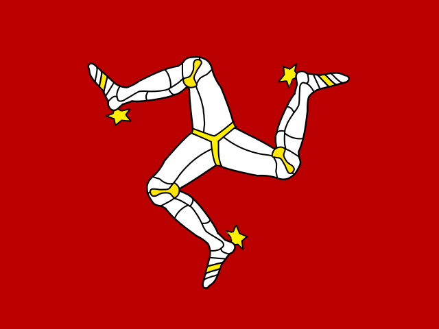

Densité de population par pays en Europe (2026)
Nombre de personnes par kilomètre carré.
Filtrer par :
Régions
Catégories
Affichage : 48 (45 pays, 3 territoires)
Décroissant
2026
| 1 | Monaco | 25 562 | ||
| 2 | Gibraltar | 4 087 | ||
| 3 | Malte | 1 743 | ||
| 4 | Vatican | 1 151 | ||
| 5 | Saint-Marin | 550,9 | ||
| 6 | Pays-Bas | 547,9 | ||
| 7 | Belgique | 388,9 | ||
| 8 | Royaume-Uni | 288,1 | ||
| 9 | Luxembourg | 265,4 | ||
| 10 | Liechtenstein | 252,3 | ||
| 11 | Allemagne | 240 | ||
| 12 | Suisse | 225,2 | ||
| 13 | Italie | 199,1 | ||
| 14 | Andorre | 178,2 | ||
| 15 | Kosovo | 152,9 | ||
| 16 |  |
Île de Man | 146,9 | |
| 17 | Danemark | 142,1 | ||
| 18 | Tchéquie | 136,4 | ||
| 19 | Pologne | 123,6 | ||
| 20 | France | 121,1 | ||
| 21 | Portugal | 113 | ||
| 22 | Slovaquie | 111,2 | ||
| 23 | Autriche | 110,4 | ||
| 24 | Hongrie | 105,9 | ||
| 25 | Slovénie | 105 | ||
| 26 | Albanie | 100,4 | ||
| 27 | Espagne | 95,3 | ||
| 28 | Moldavie | 90,1 | ||
| 29 | Serbie | 86,6 | ||
| 30 | Roumanie | 81,7 | ||
| 31 | Irlande | 78,4 | ||
| 32 | Grèce | 75,7 | ||
| 33 | Macédoine du Nord | 72,4 | ||
| 34 | Croatie | 68,4 | ||
| 35 | Ukraine | 68,2 | ||
| 36 | Bulgarie | 61,5 | ||
| 37 | Bosnie-Herzégovine | 60,8 | ||
| 38 | Monténégro | 45,3 | ||
| 39 | Lituanie | 44,7 | ||
| 40 | Biélorussie | 44 | ||
| 41 | Îles Féroé | 40,8 | ||
| 42 | Estonie | 30,6 | ||
| 43 | Lettonie | 29,5 | ||
| 44 | Suède | 26,3 | ||
| 45 | Finlande | 18,6 | ||
| 46 | Norvège | 18,6 | ||
| 47 | Russie | 8,8 | ||
| 48 | Islande | 4 |


© 2026 Geostarna